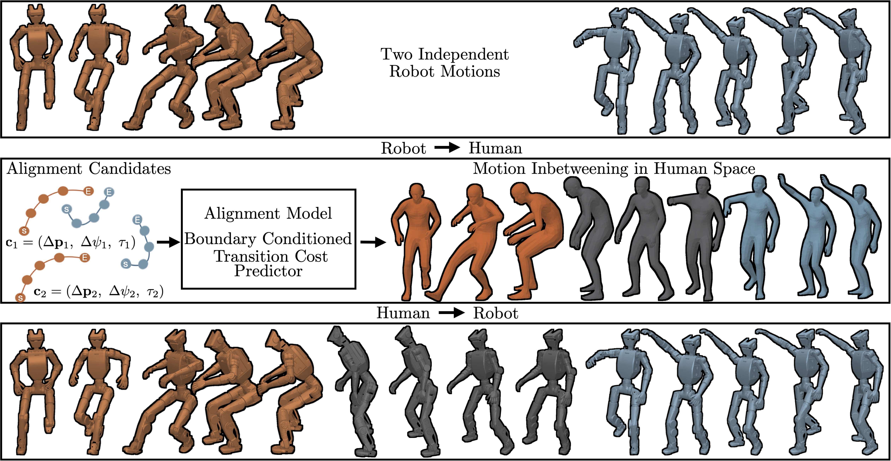

Transfer to human space
Retarget the two robot motions to a shared human rig.
Spatio-Temporal Alignment with a Motion Prior
Connecting independently acquired humanoid motions with learned spatio-temporal alignment.
Video
Overview
STAMP connects independently acquired robot motions while preserving the content and order of the input clips. Given two motions, it determines their relative position, heading, and transition duration, then generates the motion connecting them.
The input motions are first retargeted to a human rig. A learned alignment model selects boundary conditions for a human motion prior to generate the transition. The completed sequence is retargeted to the robot and used to train a motion-tracking policy. Repeating this process composes motion primitives into longer sequences.
Method
Connect robot motions through a shared human motion space.

Retarget the two robot motions to a shared human rig.
Rank candidate positions, headings, and durations using the boundary motion contexts.
Use a human motion prior to fill the gap under the selected boundary conditions.
Retarget the completed sequence and train a motion-tracking policy.
Physical robot experiments
Running to punching, with a transition that allows continued forward movement.
Interpolation places the punching start at the running endpoint. STAMP places it farther forward, allowing the motion prior to generate a connecting step.
Physical execution on ROBOTIS K1.
Evaluation
18 motion pairs per robot, evaluated under a common tracking-policy protocol.
Unitree G1
ROBOTIS K1
Paper Tables II–III. 1,024 rollouts per motion pair; 18,432 rollouts per method and robot. Each policy is evaluated against its own reference, measuring trackability rather than similarity to a shared ground-truth transition. Kimodo† denotes the Kimodo-based inbetweening model.
Motion composition
Five scenarios composed from independently acquired motion primitives.
Alignment model results
The learned model ranks candidate positions, headings, and transition durations. These videos show transitions generated under different candidate alignments in human motion space.
Lower rank indicates lower predicted transition cost. These are qualitative examples; the quantitative ranking ablation compares ranks 1 and 100.